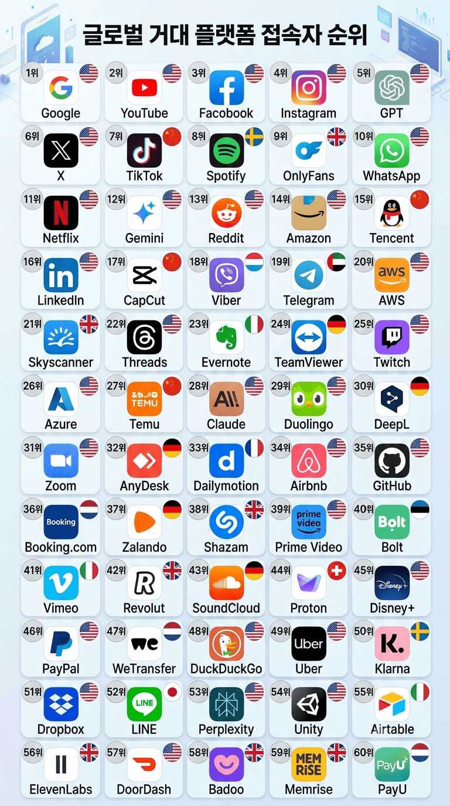

거의 모든 제조분야가 경쟁력이 사라진 2026년의 일본....

제조업이 쇠퇴해도 첨단 기술이 뛰어나면 구멍을 상쇄할수있을텐데, 일본은 첨단 기술도 거의 없다시피하다.
2026년 11월 기준 세계 반도체, AI, 소프트웨어, 생명공학, 항공우주 등 첨단 기술 분야에서 일본 기업은 단 한개도 없다.

그렇다고 일본은 대형 인터넷 플랫폼이 있는 나라도 아니다.
활성 이용자수 기준 전세계적인 플랫폼이 일본에는 라인 하나밖에 없다.
그런데 그 라인마저도 한국한테서 강제로 경영권을 뺏어왔다시피 했고, 100% 순수 일본 플랫폼은 단 1개도 없는 상황....
- dc official App
댓글
수집 당시 댓글 339개
· NO벨과학상개센징 · 11.09 01:10:03
· NO벨과학상개센징 · 11.09 01:10:23
· NO벨과학상개센징 · 11.09 01:10:39
ㅇㅇ · 11.09 01:15:26
ㅇㅇ · 11.09 01:16:34
· ㅇㅇ · 11.09 01:17:13
· ㅇㅇ · 11.09 01:17:46
· ㅇㅇ · 11.09 01:19:18
· ㅇㅇ · 11.09 01:40:37
ㅇㅇ · 11.09 01:17:09
· ㅇㅇ · 11.09 01:17:38
· ㅇㅇ · 11.09 01:18:17
· ㅇㅇ · 11.09 01:45:53
· ㅇㅇ · 11.09 06:43:34
ㅇㅇ · 11.09 01:18:01
ㅇㅇ · 11.09 01:19:00
ㅇㅇ · 11.09 01:19:04
ㅇㅇ · 11.09 01:19:05
ㅇㅇ · 11.09 01:20:07
· ㅇㅇ · 11.09 01:20:22
· ㅇㅇ · 11.09 01:21:13
· ㅇㅇ · 11.09 01:23:51
· ㅇㅇ · 11.09 01:26:50
· ㅇㅇ · 11.09 01:27:24
· ㅇㅇ · 11.09 01:31:01
ㅇㅇ · 11.09 01:21:34
· ㅇㅇ · 11.09 01:21:45
ㅇㅇ · 11.09 01:22:28
ㅇㅇ · 11.09 01:23:04
ㅇㅇ · 11.09 01:23:46
라성 · 11.09 01:24:02
· ㅇㅇ · 11.09 01:27:53
ㅇㅇ · 11.09 01:24:11
· ㅇㅇ · 11.09 01:24:36
· ㅇㅇ · 11.09 01:31:48
· ㅇㅇ · 11.09 01:37:40
· ㅇㅇ · 11.09 10:44:57
ㅇㅇ · 11.09 01:26:19
· ㅇㅇ · 11.09 01:26:41
· ㅇㅇ · 11.09 01:28:44
· ㅇㅇ · 11.09 01:29:52
ㅇㅇ · 11.09 01:26:53
ㅇㅇ · 11.09 01:28:05
ㅇㅇ · 11.09 01:28:32
ㅇㅇ · 11.09 01:30:07
ㅇㅇ · 11.09 01:31:35
· ㅇㅇ · 11.09 01:40:25
ㅇㅇ · 11.09 01:33:00
ㅇㅇ · 11.09 01:37:02
· ㅇㅇ · 11.09 01:44:13
ㅇㅇ · 11.09 01:42:10
ㅇㅇ · 11.09 01:43:03
· ㅇㅇ · 11.09 01:46:14
ㅇㅇ · 11.09 01:45:58
· ㅇㅇ · 11.09 01:48:40
ㅇㅇ · 11.09 01:56:20
· ㅇㅇ · 11.09 01:59:55
문디배설 · 11.09 01:59:14
ㅇㅇ · 11.09 02:04:12
ㅇㅇ · 11.09 02:04:41
· ㅇㅇ · 11.09 02:04:57
· ㅇㅇ · 11.09 02:05:45
· ㅇㅇ · 11.09 02:07:02
· ㅇㅇ · 11.09 02:46:56
· ㅇㅇ · 11.09 03:14:39
· ㅇㅇ · 11.09 03:30:54
wert39 · 11.09 02:33:34
ㅇㅇ · 11.09 02:36:55
· ㅇㅇ · 11.09 03:14:00
· ㅇㅇ · 11.09 03:41:43
· ㅇㅇ · 11.09 04:01:10
ㅇㅇ · 11.09 02:37:44
ㅇㅇ · 11.09 02:45:33
ㅇㅇ · 11.09 03:21:18
ㅇㅇ · 11.09 03:30:25
· ㅇㅇ · 11.09 03:33:32
· ㅇㅇ · 11.09 03:35:55
· ㅇㅇ · 11.09 06:11:29
· 내꿈은기생수! · 11.09 07:26:07
ㅇㅇ · 11.09 03:43:29
ㅇㅇ · 11.09 04:14:10
ㅇㅇ · 11.09 04:17:56
ㅇㅇ · 11.09 04:25:25
주소킹 · 11.09 05:29:59
ㅇㅇ · 11.09 05:31:56
ㅇㅇ · 11.09 05:52:16
· ㅇㅇ · 11.09 06:03:09
· 내꿈은기생수! · 11.09 07:28:11
ㅇㅇ · 11.09 06:26:36
ㅇㅇ · 11.09 06:33:34
내꿈은기생수! · 11.09 07:32:00
ㅇㅇ · 11.09 07:47:03
ㅇㅇ · 11.09 08:47:55
ㅇㅇ · 11.09 08:48:00
ㅇㅇ · 11.09 08:48:04
ㅇㅇ · 11.09 08:53:12
ㅇㅇ · 11.09 08:55:00
82641 · 11.09 11:07:27
ㅇㅇ · 11.09 14:48:42
ㅇㅇ · 11.09 19:09:35
· ㅇㅇ · 11.09 00:52:57
· ㅇㅇ · 11.09 01:17:59
삭제됨 · 11.09 00:44:46
· ㅇㅇ · 11.09 00:44:53
· ㅇㅇ · 11.09 01:23:31
ㅇㅇ · 11.09 00:45:20
· ㅇㅇ · 11.09 00:50:46
· ㅇㅇ · 11.09 00:57:40
· ㅇㅇ · 11.09 00:59:52
· ㅇㅇ · 11.09 01:22:32
· ㅇㅇ · 11.09 02:03:14
ㅇㅇ · 11.09 00:46:05
ㅇㅇ · 11.09 00:46:14
· ㅇㅇ · 11.09 01:17:27
ㅇㅇ · 11.09 00:46:39
ㅇㅇ · 11.09 00:46:50
· ㅇㅇ · 11.09 00:49:17
ㅇㅇ · 11.09 00:48:15
ㅇㅇ · 11.09 00:48:38
ㅇㅇ · 11.09 00:49:07
· ㅇㅇ · 11.09 00:49:43
· ㅇㅇ · 11.09 00:50:19
· ㅇㅇ · 11.09 00:51:03
· ㅇㅇ · 11.09 00:53:51
· ㅇㅇ · 11.09 01:12:39
ㅇㅇ · 11.09 00:50:30
· ㅇㅇ · 11.09 01:17:03
ㅇㅇ · 11.09 00:51:38
1찍
좆포티
· ㅇㅇ · 11.09 00:51:48
한강온도
체크 중
ㅇㅇ · 11.09 00:51:40
ㅇㅇ · 11.09 00:52:33
ㅇㅇ · 11.09 00:52:40
ㄲㄲ · 11.09 00:53:40
ㅇㅇ · 11.09 00:53:43
ㄲㄲ · 11.09 00:54:14
ㅇㅇ · 11.09 00:54:15
· ㅇㅇ · 11.09 00:56:16
· ㅇㅇ · 11.09 00:56:58
· ㅇㅇ · 11.09 00:57:08
삭제됨 · 11.09 00:54:27
· ㅇㅇ · 11.09 00:54:40
· ㅇㅇ · 11.09 00:54:47
· ㅇㅇ · 11.09 00:59:16
· ㅇㅇ · 11.09 00:59:27
· ㅇㅇ · 11.09 01:05:18
· ㅇㅇ · 11.09 01:05:54
· ㅇㅇ · 11.09 01:16:10
ㅇㅇ · 11.09 00:55:27
ㅇㅇ · 11.09 00:55:53
· ㅇㅇ · 11.09 01:15:16
· ㅇㅇ · 11.09 01:44:46
ㅇㅇ · 11.09 00:56:22
ㅇㅇ · 11.09 00:57:32
ㅇㅇ · 11.09 00:57:46
ㅇㅇ · 11.09 00:58:33
ㅇㅇ · 11.09 00:58:54
· ㅇㅇ · 11.09 01:23:43
· 야룽이 · 11.09 03:30:34
ㅇㅇ · 11.09 00:59:04
ㄲㄲ · 11.09 00:59:09
· ㅇㅇ · 11.09 01:04:50
ㅇㅇ · 11.09 00:59:46
ㅇㅇ · 11.09 01:00:33
· ㅇㅇ · 11.09 03:18:10
ㅇㅇ · 11.09 01:00:47
· ㅇㅇ · 11.09 01:14:56
· ㅇㅇ · 11.09 03:12:56
콩통 · 11.09 01:00:49
ㅇㅇ · 11.09 01:01:29
ㅇㅇ · 11.09 01:02:10
· ㅇㅇ · 11.09 01:02:57
· ㅇㅇ · 11.09 01:15:34
· ㅇㅇ · 11.09 01:20:53
삭제됨 · 11.09 01:02:38
· ㅇㅇ · 11.09 01:03:55
ㅇㅇ · 11.09 01:02:57
Se8en · 11.09 01:03:55
· ㅇㅇ · 11.09 03:18:39
· Se8en · 11.09 03:26:59
· ㅇㅇ · 11.09 03:37:37
· ㅇㅇ · 11.09 03:42:24
· ㅇㅇ · 11.09 04:03:50
ㅇㅇ · 11.09 01:04:11
· ㅇㅇ · 11.09 03:26:54
ㅇㅇ · 11.09 01:05:21
· ㅇㅇ · 11.09 01:13:08
· ㅇㅇ · 11.09 03:13:15
ㅇㅇ · 11.09 01:05:35
· ㅇㅇ · 11.09 01:14:15
· ㅇㅇ · 11.09 01:15:16
· ㅇㅇ · 11.09 01:15:23
· ㅇㅇ · 11.09 03:13:11
ㅇㅇ · 11.09 01:05:35
· ㅇㅇ · 11.09 03:44:52
관짝나모 · 11.09 01:06:23
dipliti · 11.09 01:06:34
· ㅇㅇ · 11.09 01:11:14
· ㅇㅇ · 11.09 01:12:31
· ㅇㅇ · 11.09 03:13:19
NO벨과학상개센징 · 11.09 01:09:49
ㅇㅇ · 11.09 00:25:56
ㅇㅇ · 11.09 00:26:49
· ㅇㅇ · 11.09 00:28:06
· ㅇㅇ · 11.09 01:19:26
ㅇㅇ · 11.09 00:27:26
ㅇㅇ · 11.09 00:27:48
· ㅇㅇ · 11.09 00:29:28
· ㅇㅇ · 11.09 00:48:42
· ㅇㅇ · 11.09 00:50:52
ㅇㅇ · 11.09 00:29:40
· ㅇㅇ · 11.09 00:29:59
· ㅇㅇ · 11.09 00:31:18
· ㅇㅇ · 11.09 00:31:33
ㅇㅇ · 11.09 00:29:50
· ㅇㅇ · 11.09 00:30:49
· ㅇㅇ · 11.09 01:19:53
ㅇㅇ · 11.09 00:30:18
ㅇㅇ · 11.09 00:30:24
· ㅇㅇ · 11.09 00:31:03
· ㅇㅇ · 11.09 01:20:22
ㅇㅇ · 11.09 00:30:33
· ㅇㅇ · 11.09 00:31:55
· ㅇㅇ · 11.09 01:21:08
ㅇㅇ · 11.09 00:30:42
· ㅇㅇ · 11.09 00:30:51
ㅇㅇ · 11.09 00:30:45
· ㅇㅇ · 11.09 00:32:27
· ㅇㅇ · 11.09 00:34:14
ㅇㅇ · 11.09 00:30:50
ㅇㅇ · 11.09 00:31:51
ㅇㅇ · 11.09 00:32:27
· ㅇㅇ · 11.09 00:32:52
ㅇㅇ · 11.09 00:32:47
· ㅇㅇ · 11.09 00:32:57
· ㅇㅇ · 11.09 00:33:09
· ㅇㅇ · 11.09 00:33:16
ㅇㅇ · 11.09 00:32:58
· ㅇㅇ · 11.09 00:40:22
ㅇㅇ · 11.09 00:33:10
ㅇㅇ · 11.09 00:33:51
ㅇㅇ · 11.09 00:33:52
ㅇㅇ · 11.09 00:34:03
상금이 · 11.09 00:34:07
ㅇㅇ · 11.09 00:34:14
· ㅇㅇ · 11.09 00:34:52
· ㅇㅇ · 11.09 00:36:04
· ㅇㅇ · 11.09 00:36:59
· ㅇㅇ · 11.09 00:38:14
· 해적선. · 11.09 00:41:54
ㅇㅇ · 11.09 00:34:49
· 현대엔지니어링 · 11.09 00:37:27
ㅇㅇ · 11.09 00:35:44
· ㅇㅇ · 11.09 00:36:43
· ㅇㅇ · 11.09 01:21:40
ㅇㅇ · 11.09 00:36:47
· ㅇㅇ · 11.09 00:38:01
ㅇㅇ · 11.09 00:37:17
ㅇㅇ · 11.09 00:37:39
ㅇㅇ · 11.09 00:37:46
· ㅇㅇ · 11.09 00:37:55
· ㅇㅇ · 11.09 00:39:06
ㅇㅇ · 11.09 00:37:58
ㅇㅇ · 11.09 00:37:59
ㅇㅇ · 11.09 00:37:59
1 · 11.09 00:38:25
ㅇㅇ · 11.09 00:39:32
· ㅇㅇ · 11.09 00:39:59
· 해적선. · 11.09 00:41:34
andrey_santos · 11.09 00:39:46
ㅇㅇ · 11.09 00:39:47
· 로또가게주인 · 11.09 00:41:40
ㅇㅇ · 11.09 00:39:53
ㅇㅇ · 11.09 00:40:09
ㅇㅇ · 11.09 00:41:02
· ㅇㅇ · 11.09 00:41:40
· ㅇㅇ · 11.09 00:41:52
· 로또가게주인 · 11.09 00:43:06
· ㅇㅇ · 11.09 00:48:22
· ㅇㅇ · 11.09 01:11:24
· ㅇㅇ · 11.09 01:22:37
ㅇㅇ · 11.09 00:41:35
ㅇㅇ · 11.09 00:41:39
· ㅇㅇ · 11.09 00:41:49
삭제됨 · 11.09 00:41:49
· ㅇㅇ · 11.09 00:43:50
ㅇㅇ · 11.09 00:42:22
ㅇㅇ · 11.09 00:42:33
ㅇㅇ · 11.09 00:42:38
· ㅇㅇ · 11.09 00:43:46
ㅇㅇ · 11.09 00:42:44
ㅇㅇ · 11.09 00:43:15
해적선. · 11.09 00:43:33
· ㅇㅇ · 11.09 00:44:17
· ㅇㅇ · 11.09 00:44:53
· ㅇㅇ · 11.09 00:45:40
· ㅇㅇ · 11.09 00:47:18
ㅇㅇ · 11.09 00:44:33
· ㅇㅇ · 11.09 00:45:54
· ㅇㅇ · 11.09 00:46:37
· ㅇㅇ · 11.09 00:48:28
땨뗘(봇) · 11.09 00:20:07
ㅇㅇ · 11.09 00:20:52
· 7times · 11.09 00:28:53
ㅇㅇ · 11.09 00:21:11
ㅇ · 11.09 00:21:30
ㅇㅇ · 11.09 00:21:37
원종이 칼 들고 급히 오다
· ㅇㅇ · 11.09 01:24:07
ㅇㅇ · 11.09 00:22:20
· ㅇㅇ · 11.09 00:22:57
· ㅇㅇ · 11.09 00:23:32
· ㅇㅇ · 11.09 00:23:33
ㅇㅇ · 11.09 00:22:32
· ㅇㅇ · 11.09 00:22:53
· ㅇㅇ · 11.09 00:25:25
· ㅇㅇ · 11.09 00:27:14
· ㅇㅇ · 11.09 00:30:52
ㅇㅇ · 11.09 00:22:54
· ㅇㅇ · 11.09 00:23:09
· ㅇㅇ · 11.09 00:23:44
· ㅇㅇ · 11.09 00:24:02
· 겐쉰프 · 11.09 00:24:44
· ㅇㅇ · 11.09 00:47:37
· ㅇㅇ · 11.09 01:14:26
· ㅇㅇ · 11.09 01:24:37
· ㅇㅇ · 11.09 01:25:42
ㅇㅇ · 11.09 00:23:00
· ㅇㅇ · 11.09 00:24:49
· ㅇㅇ · 11.09 00:26:16
· ㅇㅇ · 11.09 01:26:05
ㅇㅇ · 11.09 00:23:31
· ㅇㅇ · 11.09 00:26:42
ㅇㅇ · 11.09 00:23:50
ㅇㅈㅇㅁ · 11.09 00:24:16
ㅇㅇ · 11.09 00:24:18
ㅇㅇ · 11.09 00:24:54
ㅇㅇ · 11.09 00:25:10
· ㅇㅇ · 11.09 00:25:41
· ㅇㅇ · 11.09 00:25:56
· ㅇㅇ · 11.09 00:28:38